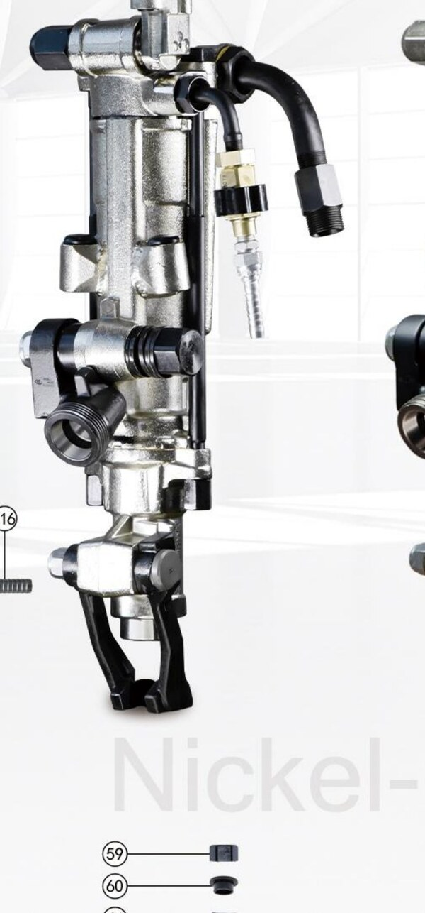
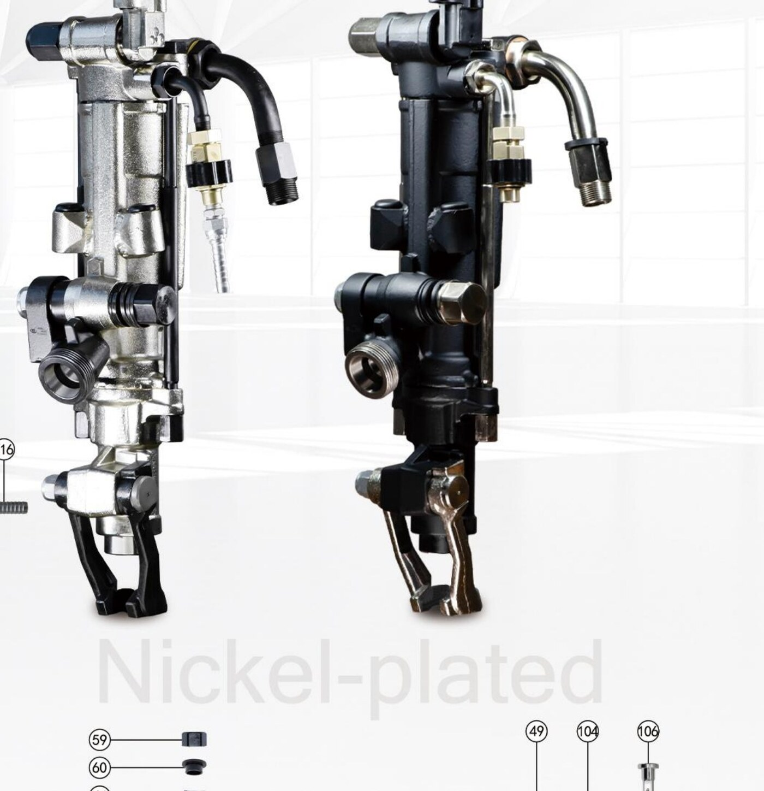
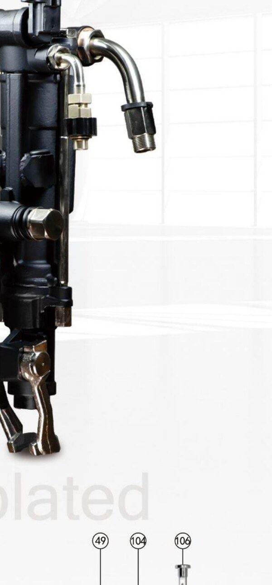
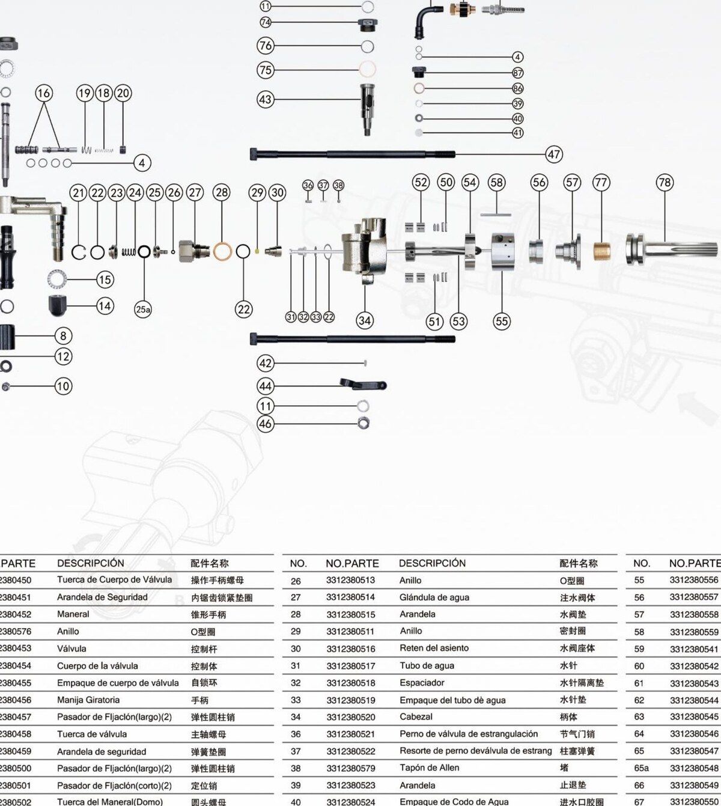

Standard Nickel-Plated
Mirror-polished nickel chassis, the workshop classic. Maximum corrosion resistance for damp underground environments and easier visual inspection of body wear.
A highly efficient pneumatic rock drill, engineered with the S250JL air-leg for hard- and medium-hard-rock wet drilling. Designed in cooperation with Epiroc (Sweden) — the legacy of more than half a century of underground rock-drill engineering.

The story
In 2021, Mr. Chad — Chief Financial Officer of Epiroc Greater China — and Mr. Yang Haitao, Manager of Shenli, signed an intellectual-property transfer agreement. Shenli will continue to build on Epiroc's drilling legacy, incorporating the most advanced technology and standards of underground rock drilling into Chinese-made products.
The Secoroc 250 (S250) is the flagship of the family. It pairs a redesigned percussion mechanism with the S250JL air-leg — a 1.3-metre pneumatic feed leg that supports the drill mass and pushes the bit forward as it cuts. Operators get clean, repeatable holes in hard rock with far less fatigue.
Engineering
Choose between the classic mirror-polish nickel chassis or the murdered-out black nickel finish — both share the same forged steel internals, hardened percussion piston, and air-leg interface.

Mirror-polished nickel chassis, the workshop classic. Maximum corrosion resistance for damp underground environments and easier visual inspection of body wear.

Premium black nickel finish over the same forged body. Reduced glare in spotlit working faces and a cleaner look for crews who prefer the murdered-out aesthetic.
Inside the S250
More than 110 individually catalogued parts — from the Cuerpo de la válvula (valve body) and rotating piston bushing to the lubricator adapter and water-control valve. Every consumable and wear part can be ordered by part number for life-of-equipment support.

Technical Data
Built for hard- and medium-hard-rock production drilling. Wet drilling reduces dust at the face and extends bit life on abrasive ore.
| Model | S250 / Secoroc 250 |
| Drill type | Pneumatic, hand-held + air-leg |
| Drill method | Wet drilling — horizontal or inclined holes |
| Bit head size | 22 × 108 mm |
| Borehole diameter | 34 – 45 mm |
| Percussion frequency | ≥ 41 Hz |
| Piston diameter | 76.2 mm |
| Piston stroke | 118 mm |
| Working air pressure | 0.63 MPa |
| Air consumption | ≤ 53.3 L/s |
| Drill rod length | 400 – 6000 mm (h22 × 108 mm tapered) |
| Air-leg model | S250JL — 1.3 m extension |
| Finish | Mirror-polished nickel · Black nickel |
| Lubrication | Inline oil pump (FY200 / FY250 / FY1100) |
| Reference standard | Epiroc IP transfer (2021) |
Applications
Production drilling in metal mines, gold mines and quarry development. Wet drilling controls silica dust at the face.
Round-hole drilling for tunnels, drifts and crosscuts. The S250JL air-leg keeps holes parallel and on-grade.
Cuttings, slope protection and trackbed drilling. Air-powered safety lets crews work near electrified lines.
Dam grouting holes, spillway anchors and reservoir slope works. Compact body fits formed concrete pours.
34 – 45 mm blast-hole drilling in granite, marble, basalt and other hard formations.
Compressed-air drive is inherently safer than gasoline or electric tools in gassy or wet underground areas.
Compatible accessories
Everything to put an S250 to work — from the air-leg and inline oil pump to the carbide bits and tapered rods that match its 22 × 108 mm shank.
Pneumatic feed leg that supports the drill weight and feeds the bit forward at a controlled rate. The standard partner for the S250.
Air-line lubrication units (200 mL, 250 mL, 1100 mL reservoirs). Essential for drill life — keeps the percussion mechanism oiled in the airline.
Forged tapered drill rods at 3.03 kg/m. h22 × 108 mm shank matches the S250 directly.
Cemented-carbide button and cross bits for every rock condition. Cold-pressed manufacturing, easy on-site re-grinding.
The drill family
If the S250 isn't quite the right size, here's the rest of the family. Click any model to see specs in the catalog drawer.
Other product families:
Pneumatic Breakers Drill Bits & Rods Air Compressors Mining Electric TricyclesTalk to us
Tell us about your project — rock type, hole sizes, daily metres — and we'll come back with a quote, lead time, and the right air-leg + bit kit. Spare parts and after-sales support are stocked for life of equipment.
📍 No.18 Qukou Industry District
Xianghe County, Hebei Province, China
📞 +86-186-3040-8666
💬 WhatsApp +86-137-5227-9993
📧 tjshenglida@gmail.com
🌐 www.xhshenli.com
"Honesty wins the market — Shenli creates quality."